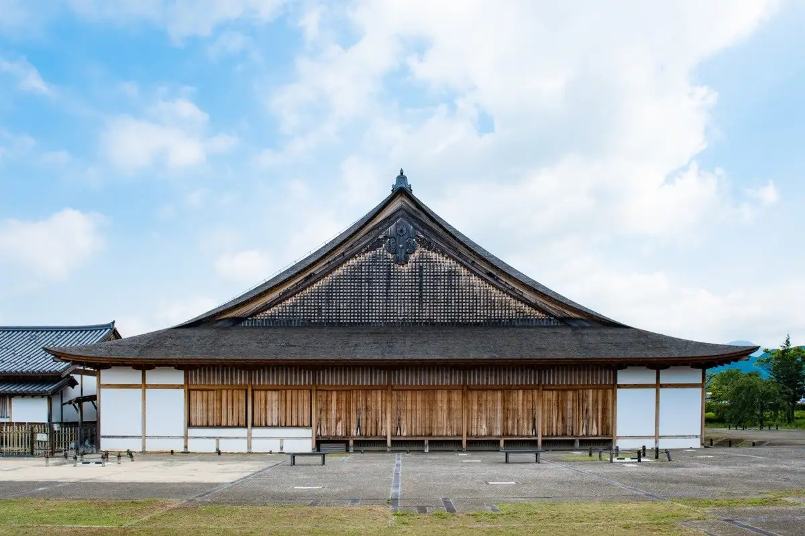
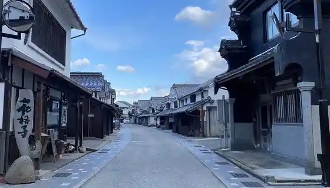
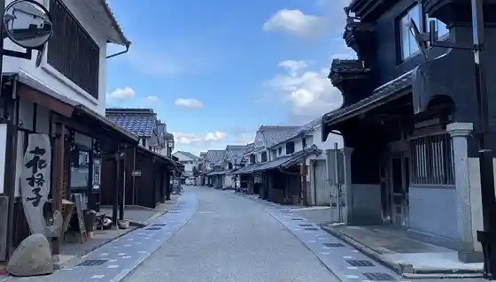
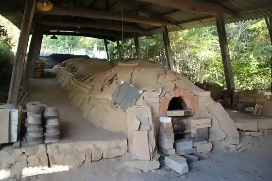
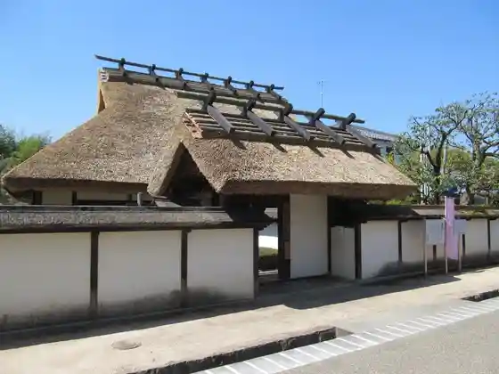

Tambasasayama
Tambasasayama · Hyogo
Tambasasayama
Highlighted on the Hyogo map.

Stay
Sasayama Castle Town Hotel NIPPONIA
Dispersed heritage hotel in restored castle-town houses with local cuisine
Cuisine Ryokan Takasago
Castle-town ryokan since 1848 serving botannabe and Tambasasayama mountain produce
Dining
Cuisine Ryokan Takasago Dining
Kaiseki and botannabe courses using black soybeans, yams, and other basin crops
Mameya
Black-soybean culture stay and café complex for Tambasasayama kuromame sweets and tea
Shop
Kuromame no Yakata
Specialty shop and tasting spot for Tambasasayama black soybeans
Sights
Sasayama Castle Oshoin
Reconstructed grand study hall of Sasayama Castle in the historic castle town
Kawaramachi Merchant Houses
Preserved tsumairi merchant-house street in the Important Preservation District

Sasayama Castle Town District
Walkable castle-town core of samurai and merchant quarters

Tamba Traditional Craft Park Sue no Sato
Craft park introducing Tamba pottery traditions

Anma Samurai House Museum
Preserved samurai residence museum in the castle town
